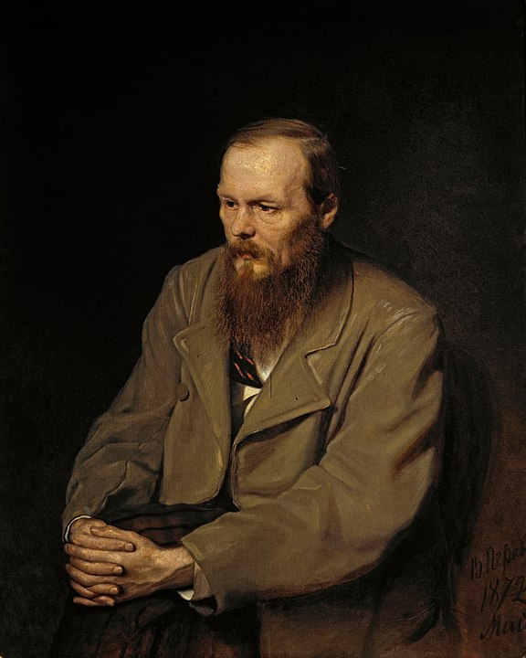

"I am Fyodor Mikhailovich Dostoevsky, a Russian novelist who has experienced both the heights and depths of human existence. From facing a mock execution to years in Siberian prison, these experiences shaped my works like 'Crime and Punishment' and 'The Brothers Karamazov,' exploring humanity's spiritual and psychological struggles."